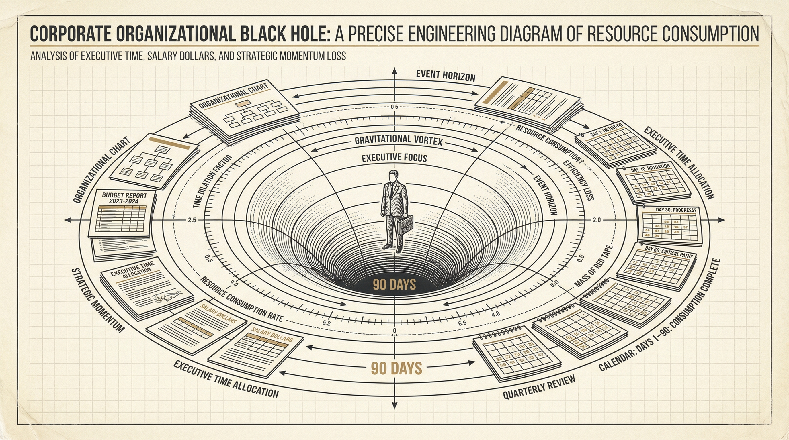
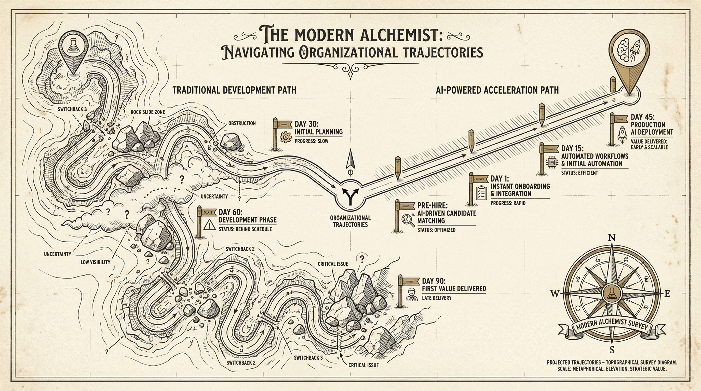

Page 2 — The Problem
The Problem No One Is Calculating
You Already Made the Right Hire.
Here's Why It Won't Matter.
You did everything right. You spent months searching. You vetted dozens of candidates. You negotiated a $250K–$400K package for a leader with the exact blend of technical depth and executive presence your AI initiative demands.
Then they started. And something predictable happened.
Not a failure. Not a bad hire. Something quieter. Something almost every company experiences but nobody talks about: Your new AI leader disappeared into a 90-day black hole of discovery — and you didn't even notice because it looked like "onboarding."

The organizational black hole that consumes your most expensive hire's first quarter — salary, opportunity cost, and organizational momentum spiraling into the void.
60–90
Days
Average time an AI hire spends on discovery before delivering any value
3–5
Months
Before executive alignment on AI priorities typically solidifies
40%
Stall Rate
Of AI initiatives stall due to misaligned expectations — not bad technology
The 90-Day Tax
The invisible toll buried inside every AI leadership hire. It never shows up on a budget. It never gets approved by the CFO. It never gets questioned in a board meeting. But it's real — and it's expensive.
The Math
A $300K AI leader costs roughly $1,500 per working day in loaded costs. Multiply that by 60–90 days of discovery-phase work — listening tours, stakeholder alignment meetings, data archaeology, governance reviews — and you're looking at $90,000–$135,000 in salary alone before a single AI solution enters production. Factor in opportunity cost, delayed revenue impact, and organizational drag... and the true 90-Day Tax often exceeds $250,000 per hire.
But here's what makes this tax so dangerous: your new AI leader doesn't even know they're paying it.
They think this is normal. They assume the first 90 days should be spent on discovery. That mapping the data landscape, mediating competing executive visions, and building governance frameworks from scratch is simply "the job."
It isn't. It's an organizational readiness failure they're quietly absorbing on your behalf — and it's burning through your most expensive quarter before a single line of production AI gets written.
Page 3 — The Two Paths
The Fork in the Road
Same Hire. Two Timelines.
One Gets Production AI in 45 Days. The Other Is Still Scheduling Stakeholder Meetings.
Every AI leader who walks through your door faces the same fork. Not because of their skill level. Not because of your technology stack. But because of one variable that determines everything that follows:
Was the organizational groundwork done before they arrived — or are they expected to do it themselves?
That single variable is the difference between a 90-day ramp and a 45-day result.

Two paths. Same hire. One organizational decision determines which timeline your AI leader travels.
The Unassisted Path
| Timeline |
What Your AI Leader Is Doing |
What You're Getting |
| Days 1–30 | Listening tours, relationship building, learning the political landscape | Understanding — but zero deliverables |
| Days 31–60 | Data ecosystem mapping, stakeholder alignment, governance review | Assessment complete — but no production AI |
| Days 61–90 | First use case scoping, executive alignment on priorities | Finally ready to build |
| Day 90+ | First AI solution enters development | 3 months of salary spent before value begins |
The Accelerated Path
| Timeline |
What Your AI Leader Is Doing |
What You're Getting |
| Pre-hire / Week 1 | Executive alignment + data readiness assessment already complete | Shared priorities and validated use cases — before Day 1 |
| Days 1–15 | Relationship building with strategy already in hand | Trust + immediate credibility (they arrived with answers, not questions) |
| Days 16–30 | First use case in development (backlog already prioritized) | Building, not discovering |
| Day 45 | First AI solution in production | 50% faster to value — at half the cost |
Look at both timelines. The hire is the same person. The technology is the same. The market conditions are the same.
The only difference is what was waiting for them when they walked in the door.
"The difference isn't the hire. It's what's waiting for them when they arrive — or who's working alongside them when they get there."
Which path is your organization on right now? Most leaders assume they're closer to the accelerated path than they actually are. The following six questions will tell you exactly where you stand — and whether the 90-Day Tax is already built into your next AI hire.
Page 4 — The Diagnostic
The Readiness Diagnostic
6 Questions That Determine Whether Your Next AI Hire Launches — Or Stalls
These aren't theoretical. They're the six organizational readiness factors that determine whether your AI leader's first 90 days are spent executing or excavating. Answer honestly — because your new hire will discover the truth either way. The only question is whether they discover it on Day 1... or Day 90.
01
Do your executives share a common definition of "AI success"?
Without shared outcomes, your hire will spend months mediating competing visions instead of building. If your CEO, CTO, and COO would each give a different answer to "What does AI success look like here in 12 months?" — your new leader's first job isn't AI. It's alignment.
02
Have you assessed your data landscape through an AI-readiness lens?
AI readiness ≠ data warehouse readiness. Your data team may have clean pipelines for reporting — but AI use cases demand different things: integration across silos, quality thresholds for training data, governance models for sensitive inputs. If these gaps haven't been surfaced, your hire's first quarter is data archaeology.
03
Can you name your top 3 AI use cases — and rank them by feasibility?
Ideas are cheap. Every department has an AI wish list. But validated, prioritized use cases — scored against actual data availability, technical feasibility, and business impact — are what a new hire needs to execute against. Without them, they'll spend weeks running a use case beauty pageant.
04
Is there an AI governance framework in place or in progress?
Without guardrails on data classification, approved AI tools, responsible AI principles, and security requirements, your hire will build policy before they build solutions. Governance isn't bureaucracy — it's the foundation that lets your AI leader move fast without creating risk.
05
Have you identified AI champions in each department?
Your AI hire can't transform the organization alone. They need internal advocates — people in finance, operations, marketing, and product who understand their department's pain points and can translate between business need and AI capability. Companies with champion networks see adoption accelerate 3x faster.
06
Does the executive team agree on how AI success will be measured?
If you can't define the KPIs before the hire starts, you can't hold anyone accountable — and the initiative risks becoming a science project. Clear success metrics aren't just for performance reviews. They're the navigation system your AI leader uses to prioritize every decision in their first 90 days.
Where Do You Stand?
5–6 "Yes" answers: You're ready. Your AI leader will hit the ground executing.
3–4 "Yes" answers: Gaps exist. Your hire will find them — the hard way, on your dime.
0–2 "Yes" answers: The 90-Day Tax isn't a risk. It's a certainty.
If you scored lower than you expected, you're not alone. Most companies we work with are at 2–3. The good news: these gaps don't require a six-month transformation to close. They require a structured sprint — either before your hire starts or embedded alongside them in their first 90 days.
Here's what that looks like.
Page 5 — Two Models + CTA
Eliminating the Tax
Two Models. Same Outcome.
The Right One Depends on Where You Are Today.
The gaps you identified above aren't permanent. They're solvable — and they're solvable fast. The only question is timing: do you close them before your AI leader starts, or alongside them in the critical first 90 days?
Both paths lead to the same destination: an AI leader who executes from Day 1 instead of discovering for 90.
Done For You
Prepare the Ground
Before They Arrive
Best for
Organizations in active search or early-stage hiring where 2–4 weeks of pre-work is available.
What we do
- Facilitate executive AI alignment workshop
- Conduct AI readiness assessment across all 6 pillars
- Validate and prioritize top use cases against real data readiness
- Produce prioritized roadmap your new hire executes from Day 1
Timeline: 2–4 weeks | Result: Production AI by Day 45
Done With You
Accelerate Alongside
Your New Hire
Best for
Organizations that have already hired (or are close) and want to amplify their new leader's impact from the start.
What we do
- Embed alongside your AI leader as a strategic accelerant
- Bring structured frameworks so they don't build from scratch
- Supplement capacity: data assessment, governance, rapid prototyping
- Provide sounding board for cross-functional alignment
Timeline: 30–90 days embedded | Result: 90-day results in 45 days
The companies that move fastest on AI don't have better AI talent than you. They don't have bigger budgets. They don't have more advanced technology.
They simply refused to make their most expensive hire figure it all out alone.
The 90-Day Tax is real. But it's also optional.
Alvis House
AI Strategy & Transformation
Ready to eliminate the 90-Day Tax
before your next AI hire badges in?
I'd welcome 15 minutes to show you exactly which of these readiness gaps apply to your organization — and how to close them before Day 1.
alvishouse.io